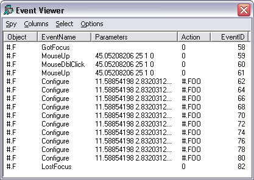
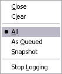
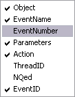
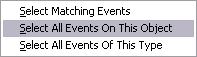
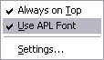
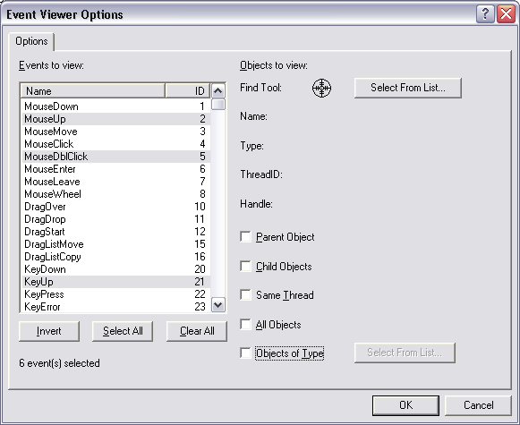

The Event Viewer can be used to monitor events on Dyalog APL GUI objects. To display the Event Viewer, select Event Viewer from the Session Tools menu.
You can choose:

In the example illustrated above, the user has chosen to monitor events on a Form #.F. Furthermore, the user has chosen to monitor GotFocus, LostFocus, MouseUp, MouseDblClick and Configure events. Notice that there is a callback #.FOO attached to the Configure event.

The Spy menu, illustrated above, provides the following options and actions.
| Close: | Closes the Event Viewer |
| Clear: | Clears all of the event information that is currently displayed in the Event Viewer. |
| All: | In this mode all the events are displayed in the Event Viewer as they occur, whether or not there is an action associated with them. |
| As Queued: | In this mode only events that have associated actions are displayed in the event viewer. Note that KeyPress events are always queued and therefore always appear, even if there is no associated action. |
| SnapShot: | In this mode the Event Viewer displays a snapshot of the internal event queue. Only those events that are currently in the internal APL event queue waiting to be processed are displayed. |
| Stop Logging: | When checked, this item switches event logging off. |

The Columns menu allows you to choose which information is displayed for the events you are monitoring.
| Object | If checked, this item displays the name of the object on which the event occurred. |
| Event Name | If checked, this item displays the name of the event that occurred. |
| Event Number | If checked, this item displays the event number of the event that occurred. |
| Parameters | If checked, this item displays the parameters for the event that occurred. These are the items that would be passed in the argument to a callback function. |
| Action | If checked, this item displays the action associated with the event, for example the name of a callback function, or an expression to be executed. |
| Thread ID | If checked, this item displays the thread id of the thread in which the event occurred |
| Nqed | If checked, this item displays 0 or 1 according to whether or not the event occurred naturally or was generated programmatically by ⎕NQ. |
| Event ID | If checked, this item displays the event id of the event that occurred. This id is used internally. |

The Select menu allows you to highlight certain events in the Event Viewer. For example, if you are monitoring TCP/IP events on a number of TCPSockets, you can highlight just the events for a particular socket.
| Select Matching Events | Highlights all the events that have the same Object and Event Name (or Event Number) as the currently selected event. |
| Select All Events On This Object | Highlights all the events that have the same Object as the currently selected event. |
| Select All Events Of This Type | Highlights all the events that have the same Event Name (or Event Number) as the currently selected event |
These items are also available from the pop-up menu that appears when you press the right mouse button over an event displayed in the Event Viewer window.

The Options menu allows you to choose which information is displayed for the events you are monitoring.
| Always on Top | If checked, this item causes the Event Viewer window to be displayed above all other windows (including other application windows). |
| Use APL font | If checked, this item causes the information displayed in the Event Viewer window to be displayed using the APL font (the same font as is used in the Session window). If not, the system uses the appropriate Windows font. |
| Settings... | Displays the Event Viewer Options Dialog Box. |
The Event Viewer Options dialog box allows you to select the objects and events that you wish to monitor.

The list box shows all the events that are support by the Dyalog APL GUI and allows you to select which events are to be monitored. Only those events that are selected will be reported. You can sort the events by name or by event number by clicking the appropriate column header.
| All Objects | If checked, this item enables event reporting on all Dyalog APL GUI objects. |
| Objects of Type | If checked, this item activates the adjoining Select button and disables all other Object selection mechanisms. Clicking the Select button brings up a dialog box that allows you to choose which types of Dyalog APL GUI objects you want to monitor. |
| Find Tool | This tool allows you to choose a single specific Dyalog APL GUI object that you want to monitor. To use it, drag the Find Tool and move it over your Dyalog APL GUI objects. As you drag it, the individual objects are highlighted and their details displayed in the Name,Type, Thread ID and Handle fields. Drop the Find Tool on the object of your choice. |
| Select | Clicking this button brings up a dialog box that displays the entire Dyalog APL GUI structure as a tree view. You can choose a single object by selecting it. |